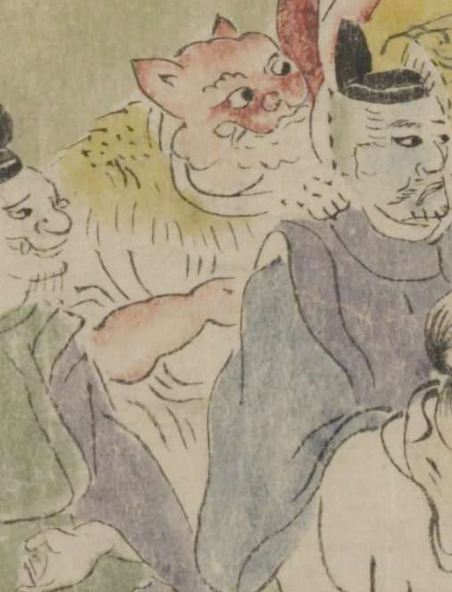

赤い肌の獣のような顔をした鬼。髪は生えておらず、耳は尖って、犬か猫のように立っている。鼻は丸く、口は横に裂け、上顎から牙が覗いている。白い着物をまとい、肩に毛皮をかけている。
著作者：坂本弥一郎徳定／出典：親書誌：U426_nichibunken_0080：伊吹山酒呑童子絵巻；イブキヤマシュテンドウジエマキ／日付：2007／資源識別子：U426_nichibunken_0080_0004_0006
Copyright (c)2010- International Research Center for Japanese Studies, Kyoto, Japan. All rights reserved.